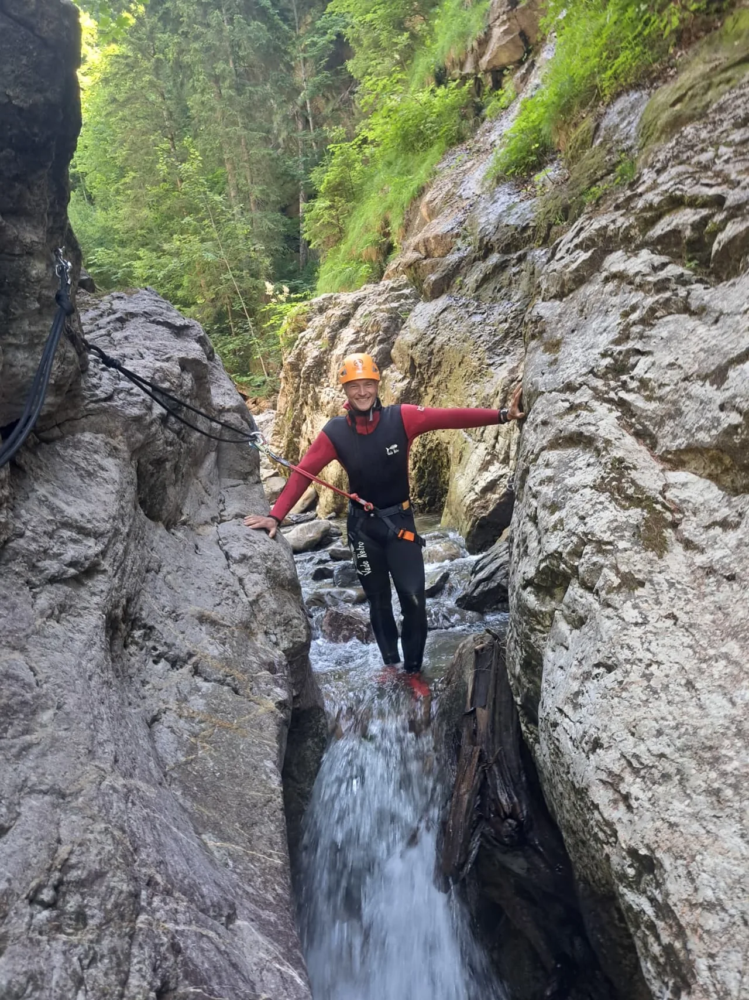

Was in der Regel gestellt wird
Bei geführten Canyoning-Touren gehören Neopren, Helm und Gurt normalerweise zur Ausrüstung des Veranstalters. Die Details können abweichen, aber genau deshalb lohnt sich ein kurzer Blick in die Infos vor dem Termin.
Zu viel mitzunehmen hilft im Canyon nicht. Zu wenig mitzunehmen aber auch nicht. Diese Liste ist absichtlich knapp gehalten: was du selbst dabeihaben solltest, was normalerweise gestellt wird und was du besser zu Hause lässt.

Bei geführten Canyoning-Touren gehören Neopren, Helm und Gurt normalerweise zur Ausrüstung des Veranstalters. Die Details können abweichen, aber genau deshalb lohnt sich ein kurzer Blick in die Infos vor dem Termin.
Alles, was lose, empfindlich oder unnötig ist: Schmuck, empfindliche Elektronik ohne sicheren Plan, zu viel Zusatzkleidung und Gegenstände, die im Nassen eher zur Belastung werden.
| Mitnehmen | Wird meist gestellt | Lieber vermeiden |
|---|---|---|
| Badebekleidung | Neoprenanzug | Schmuck |
| Handtuch | Helm | unnötige Wertsachen |
| Wechselkleidung | Gurt | schwere Zusatztaschen |
| Getränk für davor/danach | technische Einweisung | falsche Erwartungen an Trockenheit |
Sieh dir an, wie diese Packliste im Kontext der Starzlachklamm funktioniert.
Zum Starzlachklamm-GuideWenn du verstehen willst, warum Ausrüstung nur ein Teil des Themas ist.
Zur SicherheitsseiteFür die wiederkehrenden Detailfragen zu Kleidung, Wetter und Ablauf.
Zur FAQEmpfehlung
Die Buchung erfolgt auf der Partnerseite von BlueRiver. Der Link ist vor allem dann sinnvoll, wenn du das Thema Ausrüstung für dich abgehakt hast und direkt zur Tourauswahl im Allgäu willst.